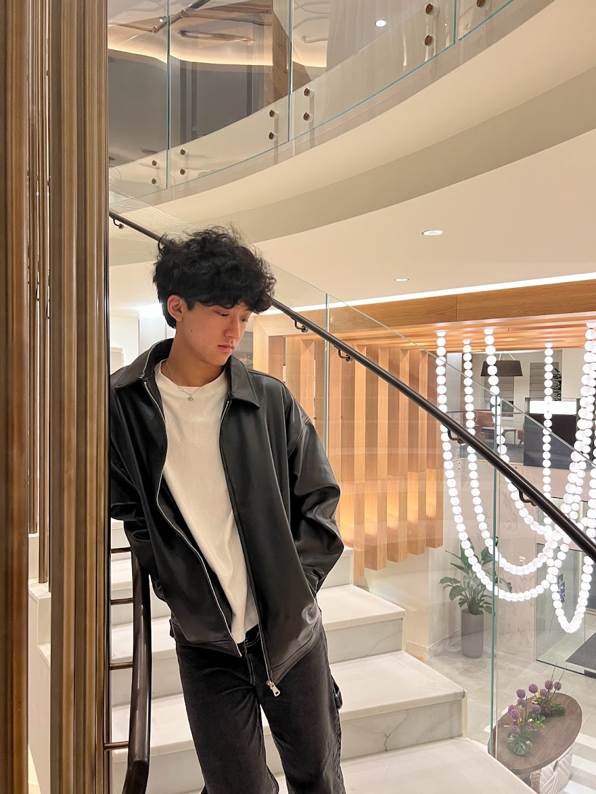

Software Engineer
Click Me!
01
GROWTH
My growth comes from being curious, making mistakes, and finding exceptional ways to solve problems.
02
Academic Journey
Over the past 3+ years, I had the opportunity to work with several programming languages, including functional languages such as OCaml and Rust, as well as imperative ones like Python, Java, and web technologies (HTML,CSS,JAVASCRIPT)
03
SCHOOL
4th year Computer Science major and Technology Entrepreneurship and Corporate Innovation minor at the University of Maryland, College Park
04
CURRENT EXPERIENCE
I developed TerpSpear, a web app to help students decide where to go and spend time on campus. I took an active role in guiding project direction, collaborating with teammates, and delivering a professional presentation that highlighted our work and outlined future growth opportunities to industry mentors.
05
PERSONAL
BEYOND ACADEMICS, I ENJOY PLAYING VIDEO GAMES SUCH AS VALORANT AND THE FINALS, LISTING TO MUSIC, AND WORKING OUT TO STAY BALANCED AND ENERGIZED
(˶˃⤙˂˶)